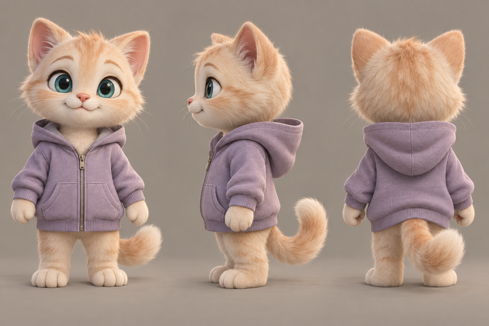
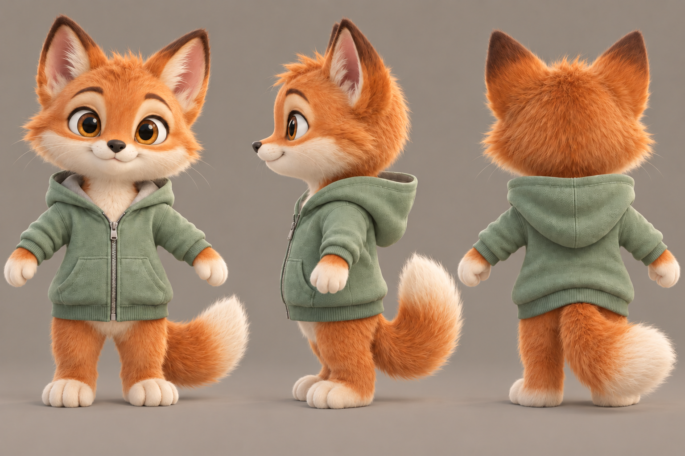
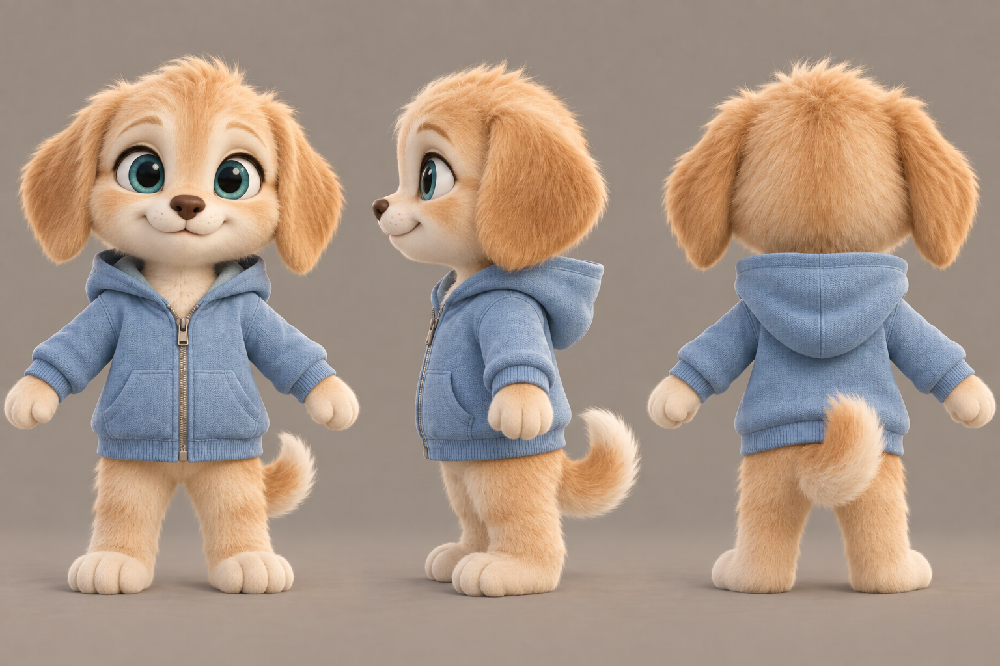
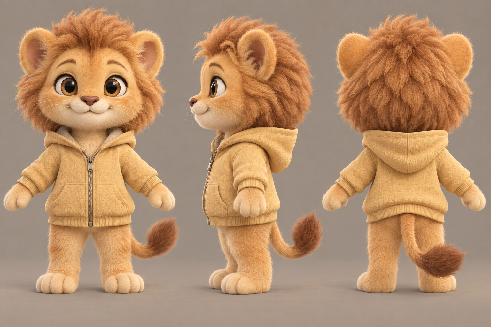
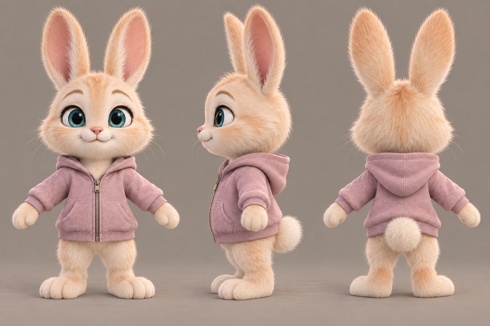
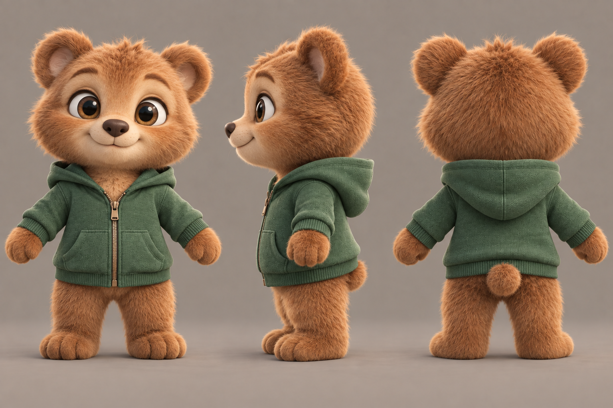
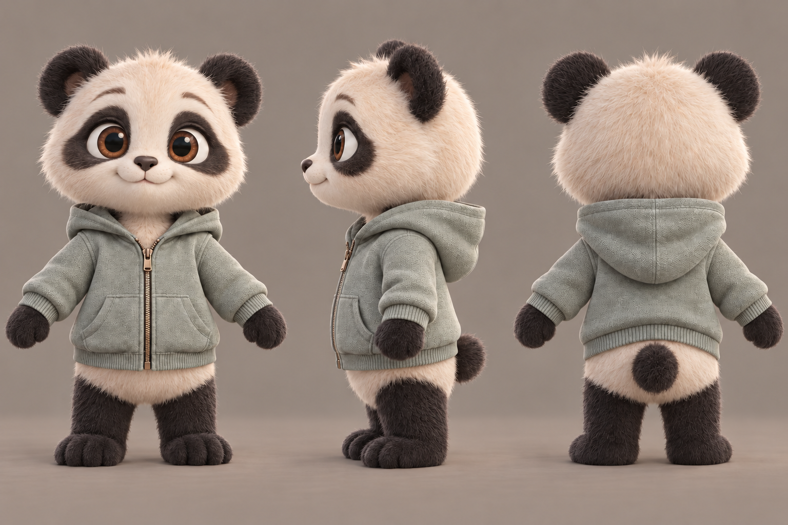
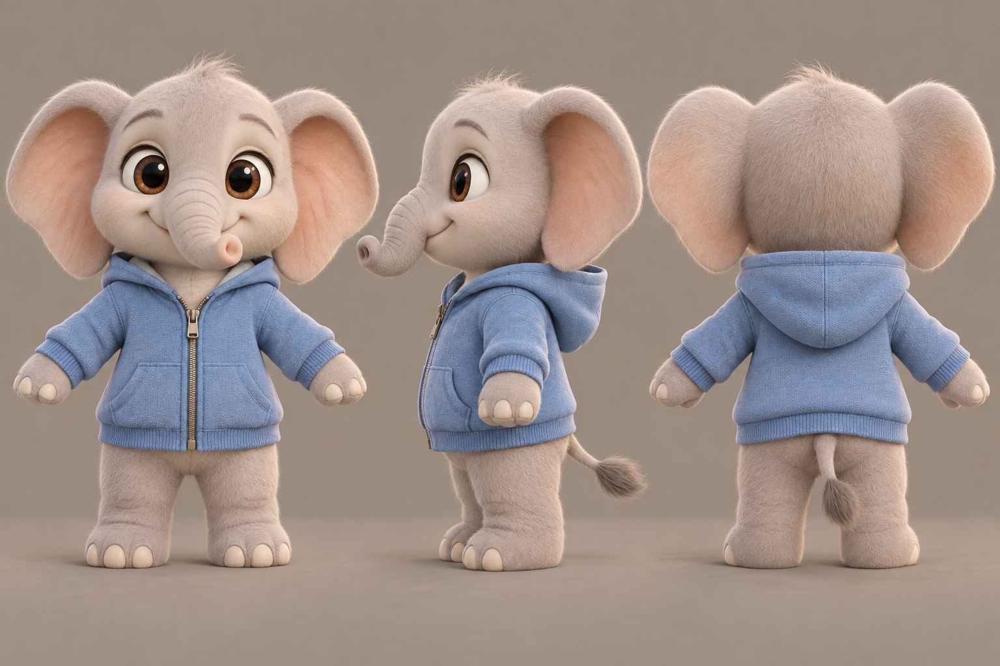

Milo · CAT
Котёнок
Восемь добрых персонажей в одном стиле: мягкие формы, выразительные глаза и уютные худи. Каждый лист показывает героя спереди, сбоку и сзади.








Откройте полный лист нажатием на изображение. PNG подходит как референс в Blender. Для сервиса с одним входным изображением подготовьте отдельный полный ракурс одного героя; для нескольких входов используйте согласованные ракурсы в одной позе.
Это иллюстрированные референсы. При моделировании нужно согласовать объём головы, длину конечностей и детали между ракурсами. Общий скелет, материалы и движения будут переноситься с доработанного Milo.